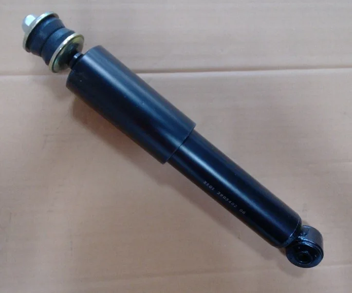
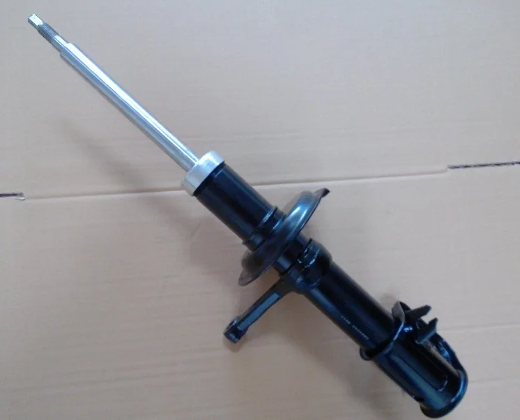
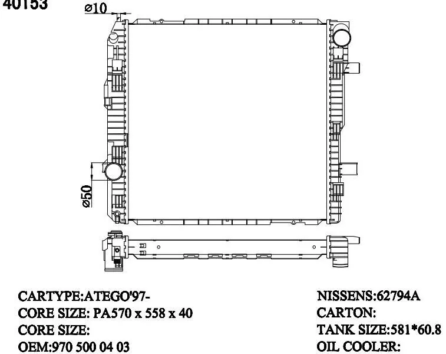
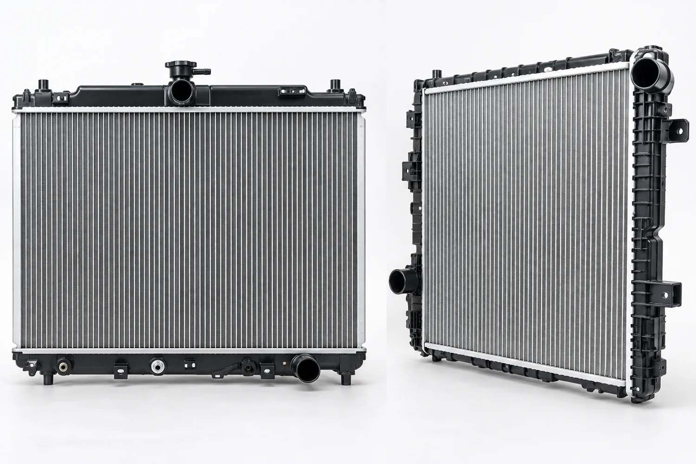
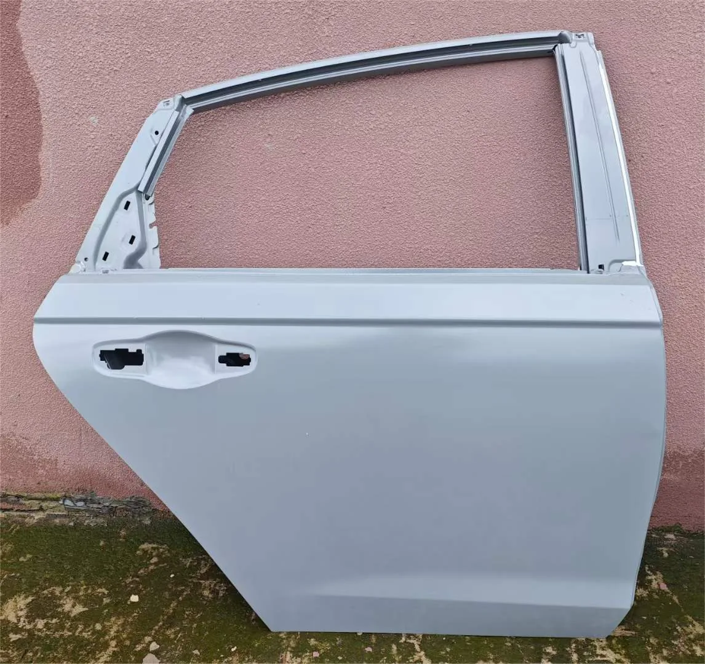
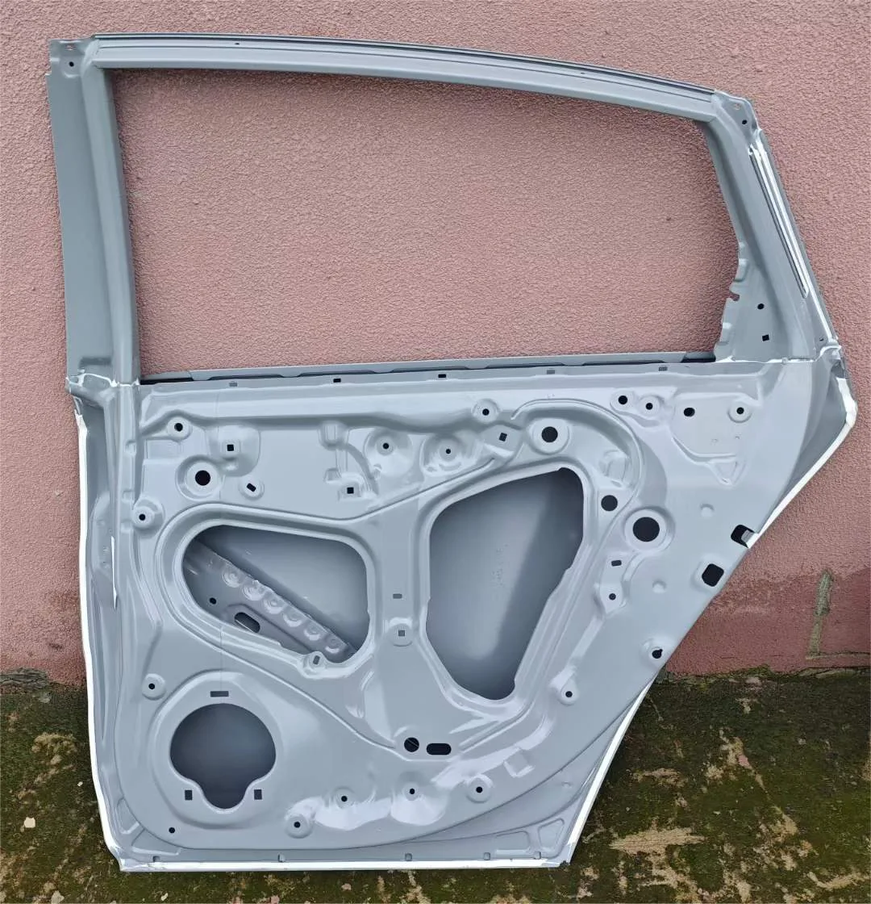
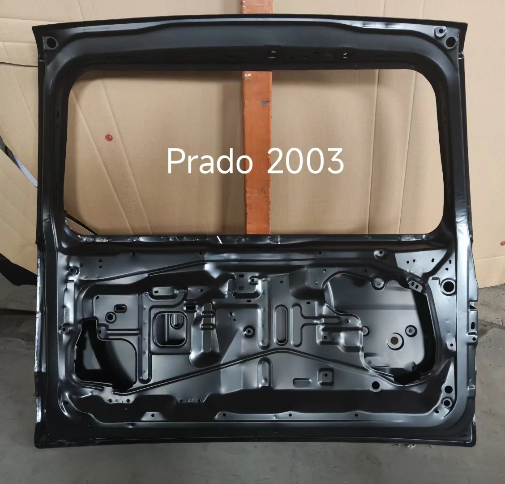
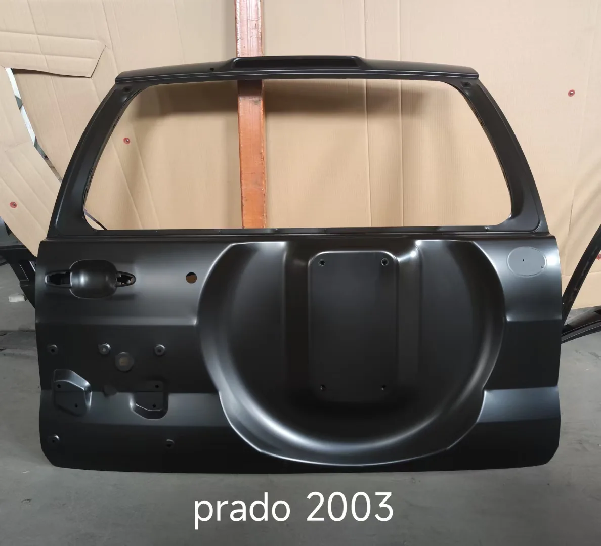

Ontee Auto Parts Co., Ltd. is a Taiwan-based automotive parts exporter. Manufacturing process videos show partner production processes and are not claims of an Ontee-owned factory. Product specifications and fitment must be confirmed before ordering.
Shock Absorbers
Front struts and rear shock absorbers for aftermarket applications. Confirm fitment by vehicle model and OEM reference.
Manufacturing partner process video 1



Radiators
Radiator manufacturing video and reference engineering drawings. Specifications and vehicle applications require confirmation.
Manufacturing partner process video 1



Auto Body Parts
Hoods, fenders, door panels and tailgates supplied through manufacturing partners.
Manufacturing partner process video 1
Manufacturing partner process video 2
Manufacturing partner process video 3





